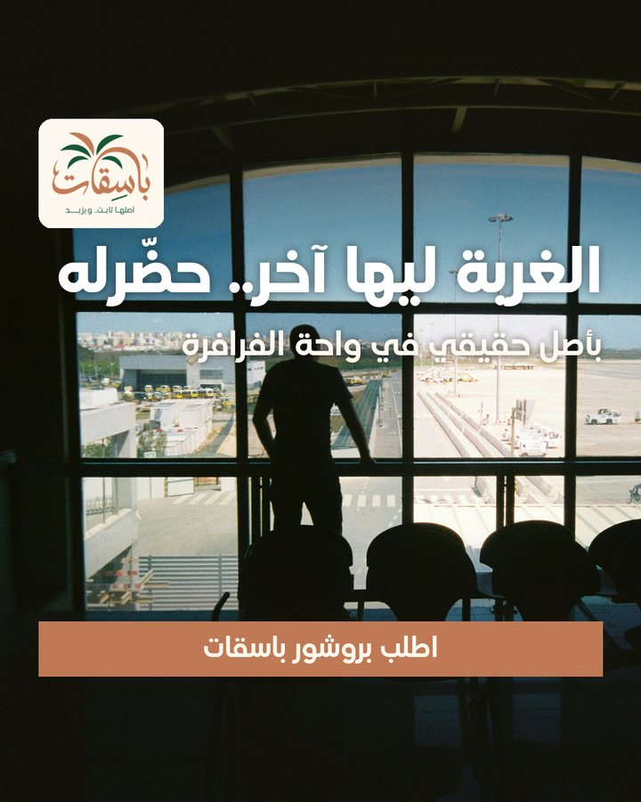

الغربة ليها آخر.. حضّرله
نفس الجملة اللي شغالة كويس مع المصريين في الخليج، والصورة لراجل واقف فعلاً في المطار وضهره لينا، بيبص على الطيارات. اللي شايف الإعلان يحط نفسه مكانه.
سنين بتعدّي في الشغل والسفر، وكل مرة بترجع فيها مصر بتسأل نفسك نفس السؤال: أنا بنيت هنا إيه؟
العقار غالي ومحتاج متابعة. والدهب بيحافظ على قيمته بس مش بيجيب دخل. والفلوس في البنك التضخم بياكلها.
فيه اختيار تاني: مشاركة في مشروع نخيل مجدول في واحة الفرافرة، بإدارة احترافية كاملة، وتقارير بتوصلك وإنت في مكانك.
الأرض مخصصة بأمر تخصيص رسمي من محافظة الوادي الجديد، والآبار محفورة، وشبكة الري موجودة.
والنخل أصل بياخد وقته: الإنتاج بيبدأ من السنة الرابعة تقريباً، وبنوضّحلك الأرقام كلها في المحادثة.
افهم الأول وبعدين قرر، ومن غير ما حد يستعجلك. اطلب بروشور باسقات، أو ابدأ محادثة على الواتساب.

اضغط على أي مقاس تشوف الصورة بالحجم الكامل.
الصورة: صورة من موقع Unsplash اتصورت فعلاً (مصوّر: Nick Page)، مش معمولة بالذكاء الاصطناعي. الراجل ضهره للكاميرا فمحدش يقدر يعرفه، واتقصّت من غير أي لوجو شركة طيران.
- الكلام على الصورة
- الغربة ليها آخر.. حضّرله / بأصل حقيقي في واحة الفرافرة / اطلب بروشور باسقات
- العنوان تحت الصورة
- باسقات: أصلها ثابت.. ويزيد
- السطر اللي تحته
- سيب رقمك ونبعتلك بروشور باسقات على الواتساب
- الزرار
- معرفة المزيد
- بيودّي على
- https://start.basseqat.com/start?v=expat